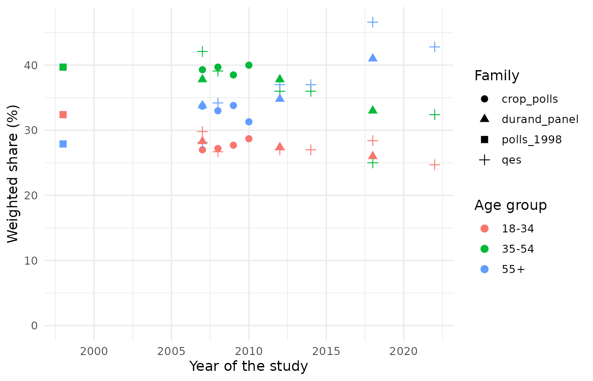
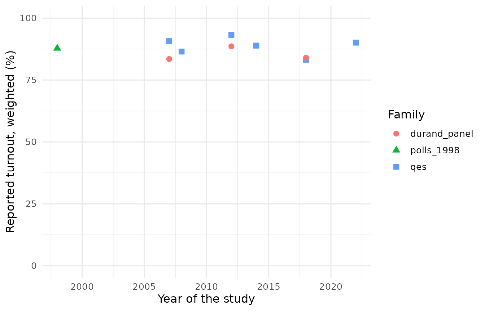

Example: respondents by study
Source:vignettes/articles/analysis-descriptive.Rmd
analysis-descriptive.RmdThis page describes the respondents of the studies in the legacy
merged file, get_qes_master(), study by study. It is built
when the website is built: the data files are downloaded from their
Dataverse deposits through qesR’s cache, so the numbers are those of the
full files, not of a sample.
For estimates with the harmonization engine (experimental), with a comparability grade for each study’s question and the weight of the wave that asked it, see Harmonizing across studies.
The studies were not designed alike: the Quebec Election Studies
(family qes), the Durand panels
(durand_panel), the CROP polls (crop_polls)
and the 1998 polls (polls_1998) differ in mode, target
population and questions. Every estimate below is computed within one
study, with that study’s own weight (survey_weight), and
never pooled across studies. The estimates are point estimates: they
ignore each survey’s design, so no confidence interval is shown.
tr <- function(en, fr) if (identical(params$lang, "fr")) fr else en
master <- get_qes_master(quiet = TRUE)
studies <- qes_studies()
master$family <- studies$family[match(master$qes_code, studies$study)]
master$year <- as.integer(master$qes_year)
# Weighted share of each value of x, within one study (or one CROP year)
wshare <- function(x, w) {
ok <- !is.na(x) & !is.na(w)
if (!any(ok)) return(NULL)
tapply(w[ok], x[ok], sum) / sum(w[ok])
}
cells <- split(master, list(master$qes_code, master$year), drop = TRUE)Table 1: respondents by study
Every respondent of every data file is kept. The CROP polls are monthly polls from 2007 to 2010, shown by year.
sizes <- do.call(rbind, lapply(cells, function(d) {
data.frame(study = d$qes_code[1], year = d$year[1], family = d$family[1], n = nrow(d))
}))
sizes <- sizes[order(sizes$year, sizes$study), ]
knitr::kable(
sizes, row.names = FALSE,
col.names = tr(c("Study", "Year", "Family", "Respondents"),
c("Étude", "Année", "Famille", "Répondants"))
)| Study | Year | Family | Respondents |
|---|---|---|---|
| qes1998 | 1998 | polls_1998 | 1483 |
| qes_crop_2007_2010 | 2007 | crop_polls | 5007 |
| qes2007 | 2007 | qes | 2175 |
| qes2007_panel | 2007 | durand_panel | 2442 |
| qes_crop_2007_2010 | 2008 | crop_polls | 10012 |
| qes2008 | 2008 | qes | 1151 |
| qes_crop_2007_2010 | 2009 | crop_polls | 8008 |
| qes_crop_2007_2010 | 2010 | crop_polls | 1000 |
| qes2012 | 2012 | qes | 1505 |
| qes2012_panel | 2012 | durand_panel | 844 |
| qes2014 | 2014 | qes | 1517 |
| qes2018 | 2018 | qes | 3072 |
| qes2018_panel | 2018 | durand_panel | 1250 |
| qes2022 | 2022 | qes | 1521 |
Table 2: age groups
The studies record age in different bands: six bands in most studies,
three (18-34, 35-54, 55+) in the 2018 Durand panel
(qes2018_panel). The six bands nest in the three, so the
table uses three. Target populations differ too: qes2018
covers people aged 16 and over, the 1998 polls francophones only (see
qes_studies()$target_population_en).
Shares are among respondents with a known age group, counted in the
“N” column. qes2018’s respondents aged 16 or 17 have no age
group in the legacy file and are left out, as are the few respondents of
other studies whose age is missing.
band3 <- c("18-24" = "18-34", "25-34" = "18-34", "18-34" = "18-34",
"35-44" = "35-54", "45-54" = "35-54", "35-54" = "35-54",
"55-64" = "55+", "65+" = "55+", "55+" = "55+")
master$age3 <- unname(band3[master$age_group])
cells <- split(master, list(master$qes_code, master$year), drop = TRUE)
age <- do.call(rbind, lapply(cells, function(d) {
s <- wshare(d$age3, d$survey_weight)
if (is.null(s)) return(NULL)
data.frame(study = d$qes_code[1], year = d$year[1], family = d$family[1],
n = sum(!is.na(d$age3) & !is.na(d$survey_weight)),
age3 = names(s), pct = round(100 * as.numeric(s), 1))
}))
age_wide <- reshape(age, idvar = c("study", "year", "family", "n"), timevar = "age3",
direction = "wide")
age_wide <- age_wide[order(age_wide$year, age_wide$study), ]
knitr::kable(
age_wide, row.names = FALSE, format.args = list(decimal.mark = tr(".", ",")),
col.names = c(tr(c("Study", "Year", "Family", "N with an age group"),
c("Étude", "Année", "Famille", "N avec un groupe d'âge")),
"18-34 (%)", "35-54 (%)", "55+ (%)")
)| Study | Year | Family | N with an age group | 18-34 (%) | 35-54 (%) | 55+ (%) |
|---|---|---|---|---|---|---|
| qes1998 | 1998 | polls_1998 | 1482 | 32.4 | 39.7 | 27.9 |
| qes_crop_2007_2010 | 2007 | crop_polls | 5007 | 27.0 | 39.3 | 33.7 |
| qes2007 | 2007 | qes | 2135 | 29.8 | 42.1 | 28.1 |
| qes2007_panel | 2007 | durand_panel | 2438 | 28.3 | 37.8 | 33.8 |
| qes_crop_2007_2010 | 2008 | crop_polls | 10012 | 27.2 | 39.7 | 33.0 |
| qes2008 | 2008 | qes | 1151 | 26.7 | 39.1 | 34.2 |
| qes_crop_2007_2010 | 2009 | crop_polls | 8008 | 27.7 | 38.5 | 33.8 |
| qes_crop_2007_2010 | 2010 | crop_polls | 950 | 28.7 | 40.0 | 31.3 |
| qes2012 | 2012 | qes | 1505 | 27.0 | 36.0 | 37.0 |
| qes2012_panel | 2012 | durand_panel | 844 | 27.4 | 37.8 | 34.8 |
| qes2014 | 2014 | qes | 1517 | 27.0 | 36.0 | 37.0 |
| qes2018 | 2018 | qes | 2839 | 28.4 | 25.0 | 46.6 |
| qes2018_panel | 2018 | durand_panel | 1250 | 26.0 | 33.0 | 41.0 |
| qes2022 | 2022 | qes | 1521 | 24.7 | 32.4 | 42.8 |
ggplot(age, aes(x = year, y = pct, colour = age3, shape = family)) +
geom_point(size = 2.5) +
scale_y_continuous(limits = c(0, NA)) +
labs(
x = tr("Year of the study", "Année de l'étude"),
y = tr("Weighted share (%)", "Part pondérée (%)"),
colour = tr("Age group", "Groupe d'âge"),
shape = tr("Family", "Famille")
) +
theme_minimal(base_size = 12)
Table 3: reported turnout
turnout is the turnout reported after the election (1
voted, 0 did not), in every study that asked it; qes2022
answers in its post-election wave. It is NA in the CROP
polls, which asked only about intentions (see
attr(master, "legacy_na_columns")). Surveys overestimate
turnout: people who vote are more likely to answer, and some who did not
vote say they did.
turnout <- do.call(rbind, lapply(cells, function(d) {
s <- wshare(d$turnout, d$survey_weight)
if (is.null(s) || !"1" %in% names(s)) return(NULL)
data.frame(study = d$qes_code[1], year = d$year[1], family = d$family[1],
n = sum(!is.na(d$turnout)), pct = round(100 * s[["1"]], 1))
}))
turnout <- turnout[order(turnout$year, turnout$study), ]
knitr::kable(
turnout, row.names = FALSE, format.args = list(decimal.mark = tr(".", ",")),
col.names = tr(c("Study", "Year", "Family", "N answering", "Reported turnout (%)"),
c("Étude", "Année", "Famille", "N répondants",
"Participation déclarée (%)"))
)| Study | Year | Family | N answering | Reported turnout (%) |
|---|---|---|---|---|
| qes1998 | 1998 | polls_1998 | 1483 | 87.8 |
| qes2007 | 2007 | qes | 2162 | 90.7 |
| qes2007_panel | 2007 | durand_panel | 2054 | 83.5 |
| qes2008 | 2008 | qes | 1131 | 86.5 |
| qes2012 | 2012 | qes | 1486 | 93.2 |
| qes2012_panel | 2012 | durand_panel | 844 | 88.6 |
| qes2014 | 2014 | qes | 1499 | 88.9 |
| qes2018 | 2018 | qes | 2639 | 83.2 |
| qes2018_panel | 2018 | durand_panel | 842 | 84.0 |
| qes2022 | 2022 | qes | 1215 | 90.1 |
ggplot(turnout, aes(x = year, y = pct, colour = family, shape = family)) +
geom_point(size = 2.5) +
scale_y_continuous(limits = c(0, 100)) +
labs(
x = tr("Year of the study", "Année de l'étude"),
y = tr("Reported turnout, weighted (%)", "Participation déclarée, pondérée (%)"),
colour = tr("Family", "Famille"),
shape = tr("Family", "Famille")
) +
theme_minimal(base_size = 12)
Notes
-
survey_weightis the weight variable qesR 0.4.4 read for each study, on that study’s own scale;attr(master, "legacy_column_map")describes it. - The legacy merged file is kept for code written for qesR 0.4.4;
since 0.7.0 it is rendered from the harmonization engine. What changed
since 0.4.4 is in
vignette("migrating-0.7", package = "qesR").